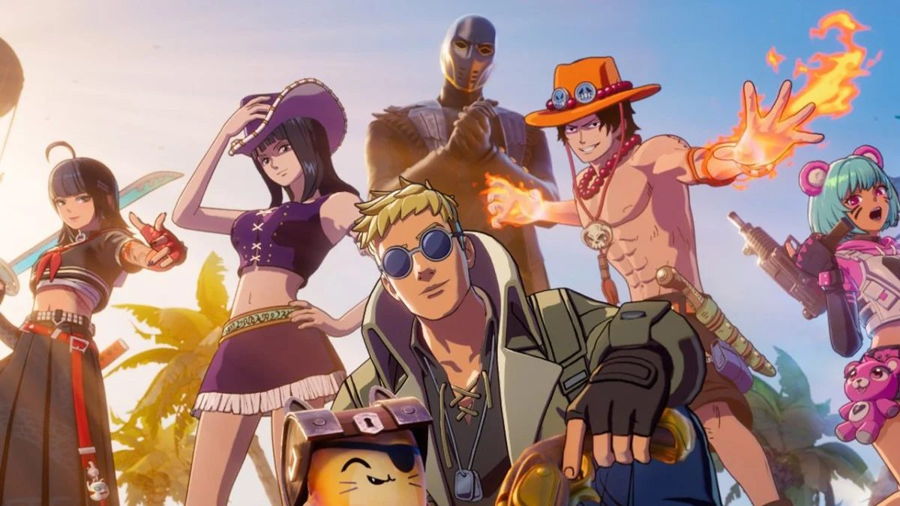
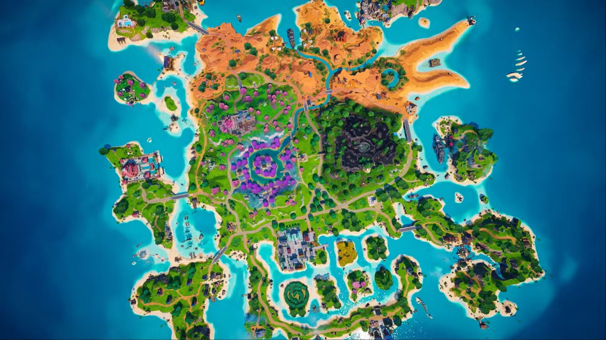
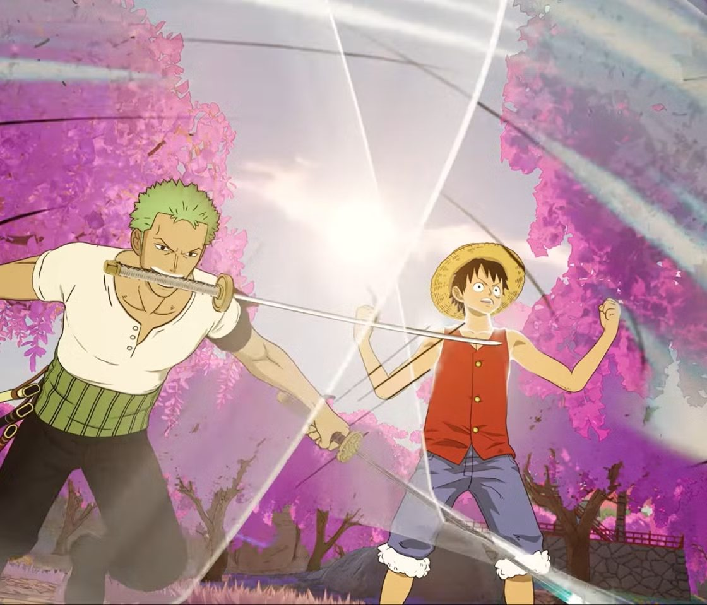

Après Azeroth, voici le nouvel objectif des déserteurs de la Faille : une mini-saison pirate avec One Piece, et des trésors rarissimes cachés dans les coffres. Voilà ce qui change par rapport au Battle Royale habituel, et tes vraies chances à chaque coffre.

Ceux qui ont quitté la Faille ne farment plus des sbires : ils ouvrent des coffres. Leur but, le jeton de la boutique pirate, tombe 1 fois sur 137 500. À ce rythme, ils reviendront sur LoL avant de l'avoir.
Les sages qui partent en chasse se retrouvent en vocal sur le Discord du Conseil.
Rejoindre les chasses au trésor

Chances par coffre ouvert, publiées par Epic Games le 7 novembre. Chaque coffre est un tirage indépendant : en ouvrir beaucoup ne garantit rien. Un même trésor ne tombe qu'une fois, sauf les gadgets.
| Trésor | Chance par coffre | En % | Coffres pour 1 chance sur 2 | Coffres pour 90 % |
|---|
Un événement d'environ deux heures, en début de soirée et dans la nuit. Tout le monde reçoit un lance-roquettes à onde de choc, la réanimation est automatique, et les chances de trésor sont multipliées.
| Trésor | Multiplicateur | Chance par coffre, au mieux |
|---|
Le jeton reste presque introuvable : en partie normale, à 10 coffres par partie, il faudrait en moyenne plus de 13 000 parties, et encore près de 7 000 au meilleur multiplicateur. Des médias parlent d'enfants qui y passent leurs soirées ; mieux vaut le voir comme une loterie que comme un objectif.
Sources : taux officiels repris par Dexerto et GameWave ; nouveautés de la saison d'après The Big Lead et Winalia. Les sources donnent le 1er ou le 5 décembre pour la fin de la saison. Site de fan, sans lien avec Epic Games.